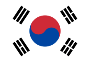

 대한민국(한국 한자: 大韓民國)은 동아시아의 한반도 군사 분계선 남부에 위치한 나라이다. 약칭으로 한국(한국 한자: 韓國)과 남한(한국 한자: 南韓, 문화어: 남조선)으로 부르며 현정체제는 대한민국 제6공화국이다. 대한민국의 국기는 대한민국 국기법에 따라 태극기[5]이며, 국가는 관습상 애국가, 국화는 관습상 무궁화이다. 공용어는 한국어와 한국 수어이다. 수도는 서울특별시이다. 인구는 2024년을 기준으로 약 5,176만 명으로, 전체 인구 중 절반이(약 2,626만 명) 수도권에 산다.
대한민국은 1948년 5월 10일 총선거를 통해 제헌국회를 구성하였고, 1948년 8월 15일 대한민국 정부를 수립하였다. 1948년 제헌 국회에서 대한민국의 국호를 계승하여 헌법에 명시하였고, 다시 1950년 1월 16일 국무원 고시 제7호 ‘국호 및 일부 지방명과 지도색 사용에 관한 건’에 의해 확정하였다.
대한민국은 20세기 후반 이후 급격한 경제 성장을 이루었다. 그 과정에서 1990년대 말 외환 위기 등의 부침이 있기도 했다. 대한민국의 2022년 1인당 국민 총소득 (GNI)은 명목 3만 4,994달러이다. 2022년 유엔개발계획 (UNDP)이 매년 발표하는 인간개발지수 (HDI) 조사에서 세계 19위를 기록하였다. 2021년 7월 2일 스위스 제네바 본부에서 열린 ‘제68차 무역개발이사회’ 마지막 회의에서 한국의 지위를 선진국 그룹으로 ‘의견 일치’로 변경하고 선진국으로 인정했다. 다만 높은 자살률, 장시간 근로 문화와 높은 산업 재해 사망률, 저출산 등의 사회 문제가 이 같은 성과와 병존한다.
1948년 이후로 오늘날까지 한반도에는 대한민국과 조선민주주의인민공화국이라는 두 개의 분단국가가 각각 남북에 위치한다. 한반도와 부속도서의 면적은 약 22만 km2이며, 인구는 대한민국과 조선민주주의인민공화국을 합쳐 2019년을 기준으로 약 7,718만 명에 달한다.